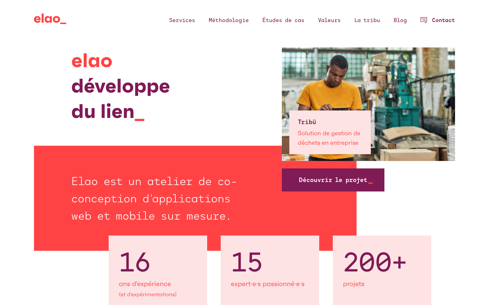

Génération
de sites statiques
L'intérêt
- üå± √âconome
- ⚙️ Automatisable
On en a testé beaucoup ...
Les limites
- Format ou structure imposée
- Impossible à etendre
On a fait le notre !
Encore un ?
Oui mais ...
- N'impose rien
- Tourne dans Symfony
- Extensible
Dites bonjour à Stenope
Bundle pour Symfony
composer require stenope/stenope
bin/console -e prod stenope:build ./static

└─ static/
├─ index.html
├─ blog/
│ ├─ index.html
│ ├─ un-super-article/
│ │ └─ index.html
│ └─ un-autre-article/
│ └─ index.html
└─ contact/
└─ index.html
Comment ça marche ?
üîç Scan ton app
üì¶ Build statique
üß≤ R√©cup√©ration des contenus
üì° D√©codage
üß© Enrichissement des donn√©es
⚗️ Hydratation du model
⚙️ Points d'entrée
Faire un blog avec Stenope
src/Model/Article.php
namespace App\Model;
class Article {
public string $slug;
public string $title;
public string $content;
public \DateTimeInterface $publication;
}
content/articles/top-10-jeux-video-indé.md
---
title: "Mon top 10 des jeux video indépendants"
publication: "16-04-2021"
---
## Jeux naratifs
- Firewatch
- Stories Untold
- Inside
- Kentucky Route Zero
- The vanishing of Ethan Carter
- The witness
- Journey
- What Remains of Edith Finch
- Return of the Obra Dinn
- Subnautica
config/packages/stenope.yaml
stenope:
providers:
local_articles:
class: 'App\Model\Article'
type: 'files'
path: '%kernel.project_dir%/content/articles'
src/Controller/BlogController
use App\Model\Article;
use Stenope\Bundle\ContentManager;
class BlogController {
/**
* @Route("/", name="blog")
*/
public function index(ContentManager $manager)
{
$articles = $manager->getContents(Article::class);
return $this->render(
'blog/index.html.twig',
['articles' => $articles]
);
}
}
src/Controller/BlogController
//...
/**
* @Route("/{slug}", name="article")
*/
public function article(string $slug)
{
$article = $this->manager->getContent(Article::class, $slug);
return $this->render(
'blog/article.html.twig',
['article' => $article]
);
}
Ses forces
N'importe quelle source,
n'importe quel format
Fournis les outils
mais n'impose rien
Laisse le pouvoir au dev
Déjà compatible
avec vos projets Symfony
Un générateur de site statique
Un outil pour la
génération de site statique
dans Symfony
Quelques exemples
Documentation Stenope

elao.com
gameoscope.fr & shiningame
 gameoscope.fr
/
shiningame.maxime-steinhausser.fr
gameoscope.fr
/
shiningame.maxime-steinhausser.fr
My Job Company
Stenope
composer require stenope/stenope